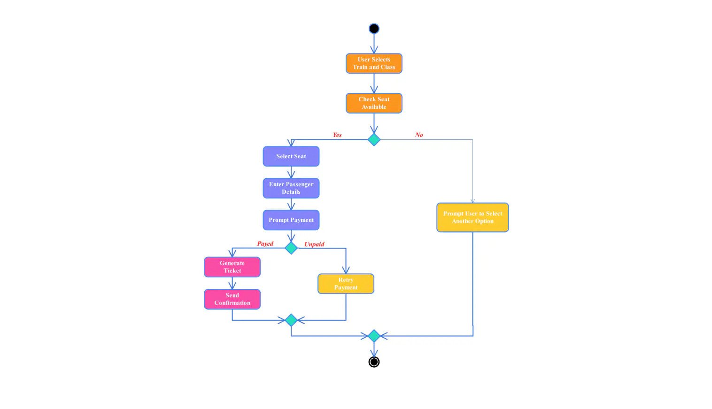

Use Case Diagram
Use case diagrams describe what a system does from the standpoint of an external observer. The people who use cases are often called actors, which can be people or other systems.
📋 Detailed Explanation
A Use Case Diagram provides a high-level view of the system's functionality by showing:
- Actors: External entities (users, other systems) that interact with the system
- Use Cases: Specific functionalities or services the system provides
- System Boundary: Defines what is inside vs outside the system
- Relationships: Shows how actors interact with use cases
💡 Real-World Example
In an Online Shopping System:
- Actors: Customer, Admin, Payment Gateway
- Use Cases: Browse Products, Add to Cart, Make Payment, Manage Inventory
- The customer can browse products and make payments
- The admin can manage inventory and view orders
✅ Best Practices
- Keep use cases at a high level - focus on "what" not "how"
- Name use cases with verb phrases (e.g., "Place Order")
- Identify all actors before defining use cases
- Don't overcomplicate - aim for clarity and simplicity
Key Elements
- Actors (Users of the system)
- Use Cases (Functionality)
- System Boundary
- Relationships
When to Use
- Requirements gathering
- System analysis
- Communication with stakeholders
- Project planning
Activity Diagram
Activity diagrams illustrate the business and operational step-by-step activities of a component or system. They show the flow from one activity to another and can model parallel activities.
📋 Detailed Explanation
Activity Diagrams are flowchart-like representations that model the workflow of a system:
- Activities: Rounded rectangles representing actions or operations
- Transitions: Arrows showing the flow between activities
- Decision Nodes: Diamond shapes for conditional logic (if/else)
- Fork/Join: Black bars showing parallel processes
- Start/End Nodes: Filled circles marking beginning and end
💡 Real-World Example
In an Order Processing System:
- Start → Receive Order → Check Stock
- Decision: Stock Available?
- Yes: Process Payment → Package Order → Ship → End
- No: Notify Customer → Backorder → End
- Parallel: Update Inventory & Send Confirmation Email
✅ Best Practices
- Start with initial node and end with final node
- Ensure all paths lead to an end state
- Use swimlanes to show responsibilities across departments
- Keep complex decisions simple - break into multiple diagrams if needed
- Use meaningful names for activities (verb + object)
Key Elements
- Activities (Actions)
- Control Flow (Arrows)
- Decision Nodes
- Start/End Points
When to Use
- Workflow modeling
- Business process analysis
- Algorithm visualization
- System behavior documentation

Class Diagram
Class diagrams show the structure of a system by displaying its classes, attributes, operations, and relationships among objects. They are central to object-oriented modeling.
📋 Detailed Explanation
Class Diagrams are the backbone of object-oriented design, showing:
- Classes: Blueprints for objects with three compartments (Name, Attributes, Methods)
- Attributes: Data members with visibility (+public, -private, #protected)
- Methods: Functions that define behavior
- Association: Line connecting related classes
- Inheritance: Arrow showing parent-child relationships
- Aggregation/Composition: "Has-a" relationships
💡 Real-World Example
In a Library Management System:
- Person (parent class) → Student, Librarian (inheritance)
- Book class: attributes (title, ISBN, author), methods (borrow(), return())
- Library has many Books (composition)
- Student borrows Books (association with multiplicity 0..*)
- Author writes Books (one-to-many relationship)
✅ Best Practices
- Use proper naming conventions (PascalCase for classes)
- Show only relevant attributes and methods
- Use abstract classes and interfaces for common behavior
- Indicate multiplicity on associations (1, 0..1, 0..*, 1..*)
- Group related classes together visually
Key Elements
- Classes (Objects)
- Attributes (Properties)
- Methods (Functions)
- Relationships (Association, Inheritance)
When to Use
- System design
- Database schema design
- Code structure planning
- Documentation of existing systems
Sequence Diagram
Sequence diagrams show how objects interact in a sequential order over time. They display the messages exchanged between objects and the order in which they occur.
📋 Detailed Explanation
Sequence Diagrams focus on the time-ordered sequence of messages:
- Lifelines: Vertical dashed lines representing objects over time
- Activation Boxes: Narrow rectangles showing when object is active
- Messages: Horizontal arrows between lifelines (sync/async)
- Return Messages: Dashed arrows showing return values
- Combined Fragments: Frames for loops, conditionals (alt, opt, loop)
- Actors: Stick figures representing external users
💡 Real-World Example
In an ATM Withdrawal System:
- User → ATM: insertCard()
- ATM → Bank: validateCard()
- Bank → ATM: cardValid(true)
- User → ATM: enterPIN()
- ATM → Bank: verifyPIN()
- Alt fragment: If valid → process, else → reject
- ATM → Cash Dispenser: dispenseCash(amount)
- Bank → Database: updateBalance()
✅ Best Practices
- Arrange objects left to right in logical order
- Use synchronous messages for immediate responses
- Use asynchronous for non-blocking operations
- Label messages clearly with parameters
- Keep diagrams focused on one scenario/use case
- Number messages for complex interactions
Key Elements
- Lifelines (Objects)
- Messages (Communication)
- Activation Boxes
- Combined Fragments
When to Use
- Detailed interaction modeling
- System behavior analysis
- Real-time system design
- Complex scenario documentation